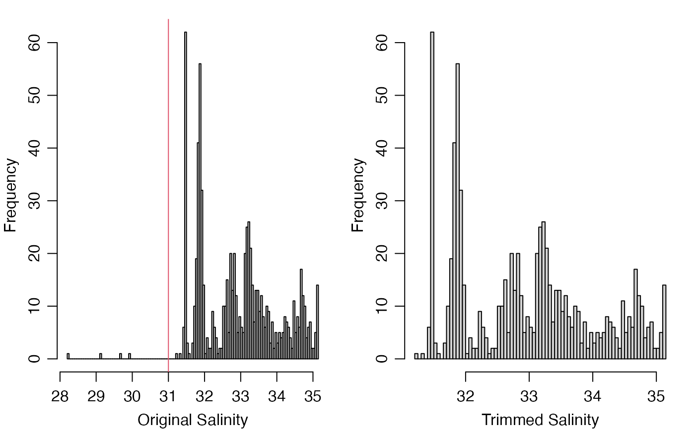

This function may be used to set suspicious data to NA,
or some other value, based on the values of corresponding data-quality
flags.
# S4 method for glider
handleFlags(
object = "oce",
flags = NULL,
actions = NULL,
where = "payload1",
debug = getOption("gliderDebug", 0)
)An object of glider.
A list specifying flag values upon which
actions will be taken. This can take two forms. In the first, the
list has named elements each containing a vector of integers. For example,
salinities flagged with values of 3 ("suspect"), 4 ("fail")
or 9 ("missing") would be specified by flags=list(salinity=c(3,4,9)).
Several data items can be specified,
e.g. flags=list(salinity=c(3,4,9),temperature=c(3,4,9)) indicates
that the actions are to take place for both salinity and temperature.
In the second form, flags is a list with unnamed vectors, and
this means to apply the actions to all the data entries; thus,
flags=list(c(3,4,9)) means to apply not just to salinity and temperature,
but also to everything else for which flags have been set up. If flags
is not provided, then defaultFlags() is called on
object, to try to determine a conservative default.
An optional list that contains items with
names that match those in the flags argument. If actions
is not supplied, the default will be to set all values identified by
flags to NA; this can also be specified by
specifying actions=list("NA"). It is also possible to specify
functions that calculate replacement values. These are provided
with object as the single argument, and must return a
replacement for the data item in question.
An optional string that permits data and flags to be stored
indirectly, e.g. with data in object@data[[where]] instead of
in object@data, and flags in object@metadata$flags[[where]] instead of in
object@metadata$flags. If where is NULL, the second forms are used. This
scheme is needed because SeaExplorer data are stored in this manner.
An optional integer specifying the degree of debugging, with
value 0 meaning to skip debugging and 1 or higher meaning to print some
information about the arguments and the data. It is usually a good idea to set
this to 1 for initial work with a dataset, to see which flags are being
handled for each data item. If not supplied, this defaults to the value of
\link{getOption}("gliderDebug",0).
The flags are stored within the object as a list
named payload1, which is stored within a list named flags
that is stored in the object's metadata slot. Both
flags and flags$payload1 are set up when the object is
created, but values are inserted into flags$payload1 are
inserted later, when the data are read by one of the read.glider*
functions.
For example, read.glider.seaexplorer.delayed()
sets flags$payload1$salinity to be a vector of length
matching the data stored in data$payload1$salinity, and
does the same for temperature and some other things that are typically
assessed as part of quality-assessment procdures. When these
things are set up, they are also assigned numerical values, one for
each element in the data set. The initial value is set to
value 2, which means not_evaluated
in the IOOS 2017 quality-control scheme (see table 2 of reference 1).
These numerical values provide a way to edit a dataset in an
convenient and traceable way, through the appropriate setting
of the flags and actions arguments. Flag values
may be altered with setFlags,glider-method(), as
illustrated in the “Examples” section.
U.S. Integrated Ocean Observing System. "Manual for the Use of Real-Time Oceanographic Data Quality Control Flags, Version 1.1," 2017. https://cdn.ioos.noaa.gov/media/2017/12/QARTOD-Data-Flags-Manual_Final_version1.1.pdf.
Other functions relating to data-quality flags:
setFlags,glider-method
library(oceGlider)
directory <- system.file("extdata/seaexplorer/raw", package="oceGlider")
g <- read.glider.seaexplorer.delayed(directory)
# The histogram motivates a crude limit for anomalously low salinity.
par(mfrow=c(1, 2), mar=c(3, 3, 1, 1), mgp=c(2, 0.75, 0))
hist(g[["salinity"]], breaks=100, xlab="Original Salinity", main="")
abline(v=31, col=2)
# Flag value 3 means 'suspect' in the IOOS scheme [1, table]; other
# flags are pass=1, not_evaluated=2 (the default as read), fail=4, and missing=9.
g2 <- setFlags(g, "salinity", g[["salinity"]]<31, 3)
g3 <- handleFlags(g2, c(3, 4, 9)) # use default action, which is "NA"
hist(g3[["salinity"]], breaks=100, xlab="Trimmed Salinity", main="")
